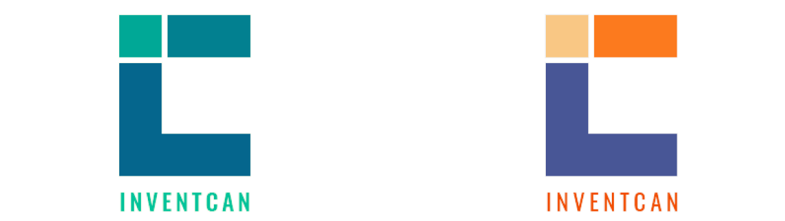

<div id="portfolio-page" class="portfolio-page-content">
    <div class="portfolio-page-wrapper">
        <div class="portfolio-page-nav">
            <div class="nav-item portfolio-page-prev-next">
                <a class="ajax-page-load" href="portfolio-project-5.html"><i class="lnr lnr-chevron-left"></i></a>
                <a class="ajax-page-load" href="portfolio-project-8.html"><i class="lnr lnr-chevron-right"></i></a>
            </div>
            <div class="nav-item portfolio-page-close-button">
                <a id="portfolio-page-close-button" href="#"><i class="lnr lnr-cross"></i></a>
            </div>
        </div>

        <div class="portfolio-page-title">
            <div>
                <h1>InventCan Logo Design</h1>
                <h5>Crafting Innovation in Visual Identity</h5>
            </div>
        </div>
        <div class="hero">
            
        </div>

        <div class="project-overview olcms">
            <div class="project-overview-row">
                <h2>Design Brief</h2>
                <p>InventCan, a forward-thinking tech company, sought a distinctive logo for their website and services. The client desired a unique and memorable visual identity that would represent their innovative approach.</p>
            </div>
        </div>

        <div class="design-process">
            <h2>Design Concept</h2>
            <div class="logo-design-row">
                <div class="logo-design-idea">
                    <h4>IDEA 1: Letter C Integration</h4>
                    <p>The first concept features a bold letter "C" that incorporates the letters "I" and "C" within its form. This design choice emphasizes the company's name and creates a strong visual connection between "Invent" and "Can," highlighting their inventive capabilities.</p>
                    
                </div>
                <div class="logo-design-idea">
                    <h4>IDEA 2: Brush Script Typography</h4>
                    <p>In the second concept, I opted for a more typographic approach. I used the elegant Brush Script MT Italic font to craft the letter "i" within a rectangular frame. This design exudes a sense of sophistication and creativity, aligning with InventCan's innovative services.</p>
                    
                </div>
            </div>
        </div>
            <!--            <div class="design-process-full-width">-->
            <!--                <div class="high-fi-wireframe">-->
            <!--                    -->
            <!--                </div>-->
            <!--            </div>-->


        <div class="conclusion_olcms">
            <div class="conclusion_olcms-row">
                <h2>Final design</h2>
                
                <h3>Concept choice</h3>
                <p> Throughout the design process, we maintained open communication with the client. Their valuable feedback helped refine the concepts and narrow down the final design.
                    After a collaborative effort and considering the client's preferences, we selected the concept featuring the letter "C" with integrated "I" and "C" elements.
                </p>
                <h3>Color scheme</h3>
                <p>During the design process, I experimented with various color combinations to evoke different emotions and brand personalities. The final design utilizes the color palette of #00A896, #028090, and #05668D. It's a combination of various of blue and green.
                    Green is a symbol of growth and innovation, while blue always associate with trust, stability, and technology. By combining these two colors in the logo, I tried to create a harmonious synergy between growth and trust, innovation and stability.</p>
            </div>
        </div>


        <!--            <div class="col-sm-4 col-md-4 portfolio-block">-->
        <!--                &lt;!&ndash; Project Description &ndash;&gt;-->
        <!--                <div class="project-description">-->
        <!--                    <div class="block-title">-->
        <!--                        <h3>Description</h3>-->
        <!--                    </div>-->
        <!--                    <ul class="project-general-info">-->
        <!--                        <li><p><i class="lnr lnr-user"></i> Alex Smith</p></li>-->
        <!--                        <li><p><i class="lnr lnr-link"></i> <a href="#" target="_blank">www.project-site.com</a></p></li>-->
        <!--                        <li><p><i class="lnr lnr-calendar-full"></i> 25 april, 2021</p></li>-->
        <!--                    </ul>-->

        <!--                    <p class="text-justify">Aliquam euismod aliquam massa, quis eleifend dui sodales vitae. Interdum et malesuada fames ac ante ipsum primis in faucibus.</p>-->
        <!--                    &lt;!&ndash; /Project Description &ndash;&gt;-->

        <!--                    &lt;!&ndash; Technology &ndash;&gt;-->
        <!--                    <div class="tags-block">-->
        <!--                        <div class="block-title">-->
        <!--                            <h3>Technology</h3>-->
        <!--                        </div>-->
        <!--                        <ul class="tags">-->
        <!--                            <li><a>HTML5</a></li>-->
        <!--                            <li><a>CSS3</a></li>-->
        <!--                            <li><a>jQuery</a></li>-->
        <!--                            <li><a>Ajax</a></li>-->
        <!--                            <li><a>PHP5</a></li>-->
        <!--                        </ul>-->
        <!--                    </div>-->
        <!--                    &lt;!&ndash; /Technology &ndash;&gt;-->

        <!--                    &lt;!&ndash; Share Buttons &ndash;&gt;-->
        <!--                    <div class="share-buttons">-->
        <!--                        <div class="block-title">-->
        <!--                            <h3>Share</h3>-->
        <!--                        </div>-->
        <!--                        <div class="share-buttons-block">-->
        <!--                            <a href="#" target="_blank" class="btn"><i class="fab fa-facebook-f"></i> </a>-->
        <!--                            <a href="#" target="_blank" class="btn"><i class="fab fa-twitter"></i> </a>-->
        <!--                            <a href="#" target="_blank" class="btn"><i class="fab fa-dribbble"></i> </a>-->
        <!--                        </div>-->
        <!--                    </div>-->
        <!--                    &lt;!&ndash; /Share Buttons &ndash;&gt;-->
        <!--                </div>-->
        <!--                &lt;!&ndash; Project Description &ndash;&gt;-->
        <!--            </div>-->

        <div class="project-page-footer">
            <p>© 2023 Yumao Chen</p>
        </div>
    </div>
</div>